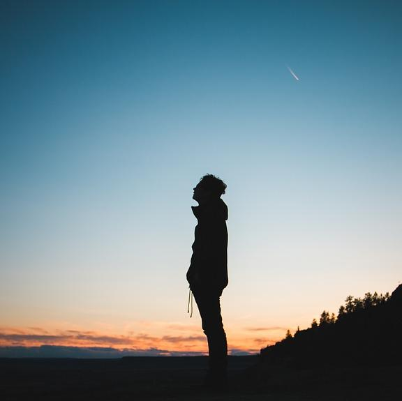

TODAY’S SPECIAL MOMENTS.
Creating a timeless look, coupled with a flawless moment
About me

How it all began… Just an ordinary boy with extraordinary dreams.
I have a different point of view about the world.
About life. I would like to share my experiences and opinions about this unpredictable life!
All of us have their own life goal in life. And we want it to come true. But before we get it,
we will encounter a lot of problems. Problems that makes you stronger or problems that makes you disappointed.
People that will put you down. People that are against on your dreams. But whatever it is.
You should aim high and dream big. Don’t mind those people that makes you down. Always think positive.
Never give up on a dream just because of the time it will take to accomplish it. The time will pass anyway.
In reaching my dreams I must accept failure, rejections, and ignored.
No one of us has been reached their dream without hard work. I must encounter challenges in life.
I always believe that nothing is impossible, keep In life, everything is a test.
Vision and persistence will take you to the top of the leadership mountain,
but the only humility will keep you there.I would like to make somebody’s day,
or possibly their life sharing a simple word or smile to spread positive energy with others.
Read More